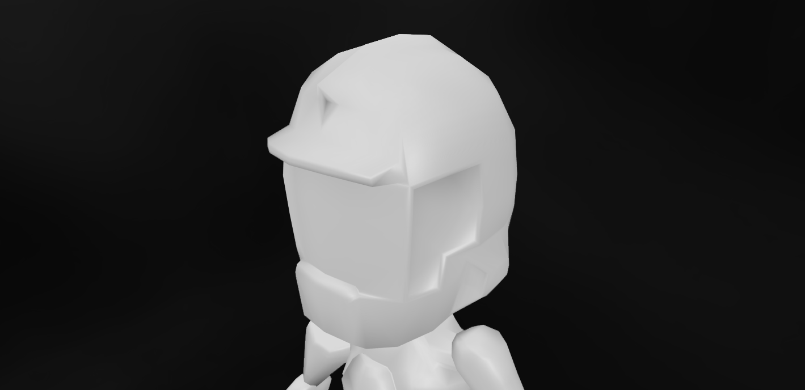
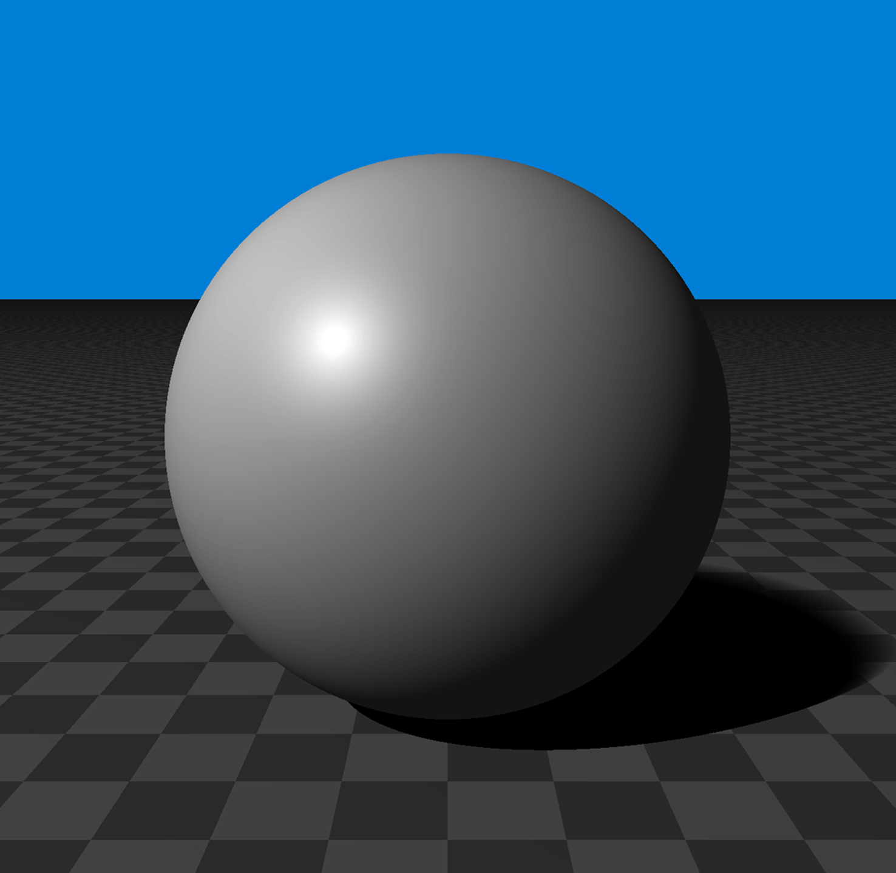

Técnicas de Gráficos por Computadora
¡Hola!
Este es el sitio oficial de Técnicas de Gráficos por Computadora, la materia de tercer año de la Universidad Tecnológica Nacional, Facultad Regional Buenos Aires. Acá vas a poder encontrar todos los recursos que necesites para la cursada.

Gráficos por Computadora
Llamamos Gráficos por Computadora al campo de las ciencias de la computación que se dedica a la generación de imágenes digitales. En esta asignatura nos enfocamos en Aplicaciones Gráficas en Tiempo Real1, muy utilizadas en el mundo de la arquitectura, videojuegos, medicina, y más.
Quiere decir que nos alejamos de los sistemas orientados a eventos, comunes en otras materias, y nos adentramos en los sistemas en tiempo real: ¡Nuestro código responde muchas veces por segundo!
El objetivo es formar personas en los fundamentos de esta área y otorgar los conocimientos necesarios para poder crear este tipo de aplicaciones, que puedan aprender los desarrollos más recientes sin dificultad.
¿Cuales son las condiciones de aprobación?
Para aprobar la asignatura es necesario realizar un trabajo teórico práctico integrador en el cual se implementan todos los conocimientos adquiridos durante la cursada y un parcial teórico práctico.
¿Cómo se desarrolla la materia?
Durante la cursada, se exploran los contenidos teóricos que conllevan dibujar modelos tridimensionales en tiempo real.
Cómo se compone un modelo, puntos en el espacio, transformaciones para llevarlo a la pantalla, y técnicas para iluminarlo junto con distintos efectos que se pueden lograr.

¿Esto significa que voy a tener que hacer modelos 3D?
¡No! la asignatura está orientada no a los recursos en una aplicación gráfica (modelos, texturas, sonidos) sino estrictamente a la programación, no evaluamos diseño gráfico.
Te vamos a dar los modelos necesarios para tu TP. Si aún querés usar un modelo propio, podes, pero tené en cuenta que el tiempo que dediques a hacer andar un modelo es tiempo que no dedicas a la parte que se evalúa!
¿Que tengo que saber de matemática para poder cursar?
Tanto la teoría como la práctica requieren de conocimientos en matemática, vistos en las materias homogéneas de la carrera.
- Cálculo vectorial
- Álgebra de matrices
- Coordenadas Cartesianas, Polares, y cómo ir de una a otra
- Geometría del espacio (Puntos, Rectas y Planos)
Como trabajamos con modelos, puntos y espacios, también es importante que desempolves tus apuntes de geometría. No vamos a derivar ni integrar.
¿Necesitás un repaso? Te cubrimos, Matemática para gráficos.
Google Group de la catedra
Contacto
-
Aquellas aplicaciones que tienen que responder en un intervalo de tiempo determinado, usualmente corto. ↩